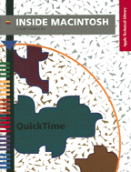

QuickTime
Inside Macintosh: QuickTime describes how your application can use QuickTime, Apple's system software extension that supports time-based data in the Macintosh desktop environment. Time-based data refers to any information that changes over time, such as sound, video, animation, data produced by scientific instruments, and financial results. This book discusses how you can
A companion book, Inside Macintosh: QuickTime Components, describes the components that are supplied by Apple as a part of QuickTime. These components augment the capabilities of the QuickTime extension, allowing you to capture digital video, compress images and sequences, and perform other related activities.
- manipulate time-based data in the same way that you work with text and graphic elements
- use the Movie Toolbox to load, play, create, edit, and store objects that contain time-based data
- use image compression and decompression to enhance the performance of QuickTime movies in an application
Availability: Click below to obtain Inside Macintosh: QuickTime in any of the following formats.

Printed 
Acrobat (6124K) 
Apple DocViewer file (3248K)
Book Contents
- Figures, Tables, and Listings
- Preface - About This Book
- Chapter 1 - Introduction to QuickTime
- Chapter 2 - Movie Toolbox
- Chapter 3 - Image Compression Manager
- Chapter 4 - Movie Resource Formats
- Glossary
- Index